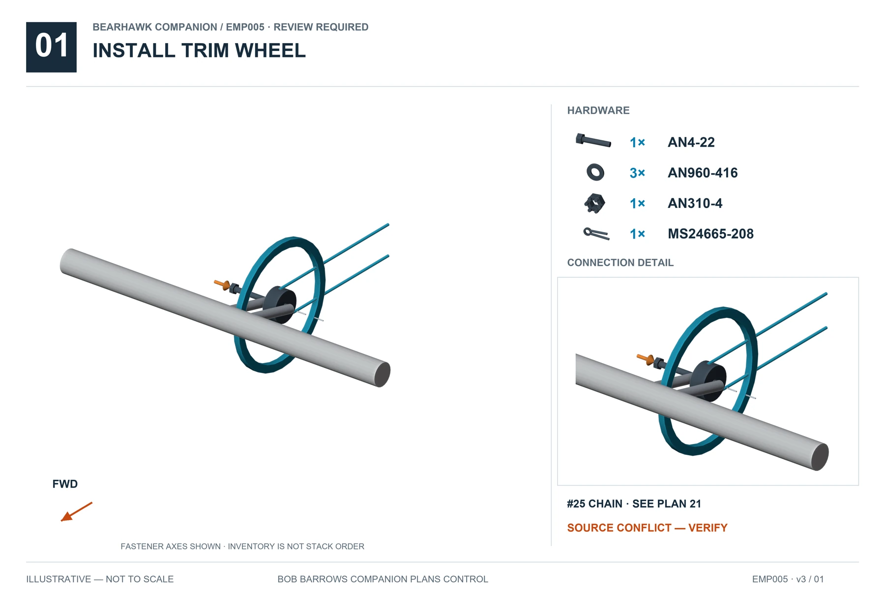
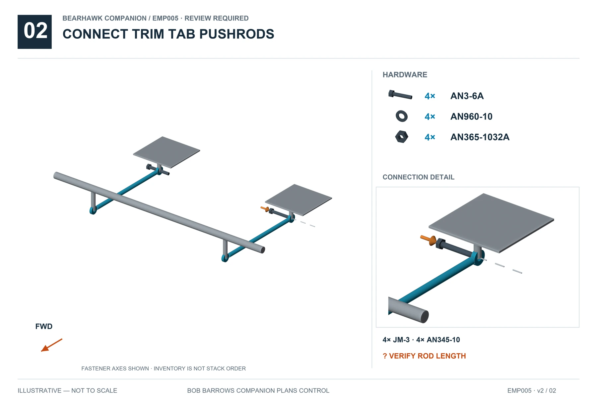
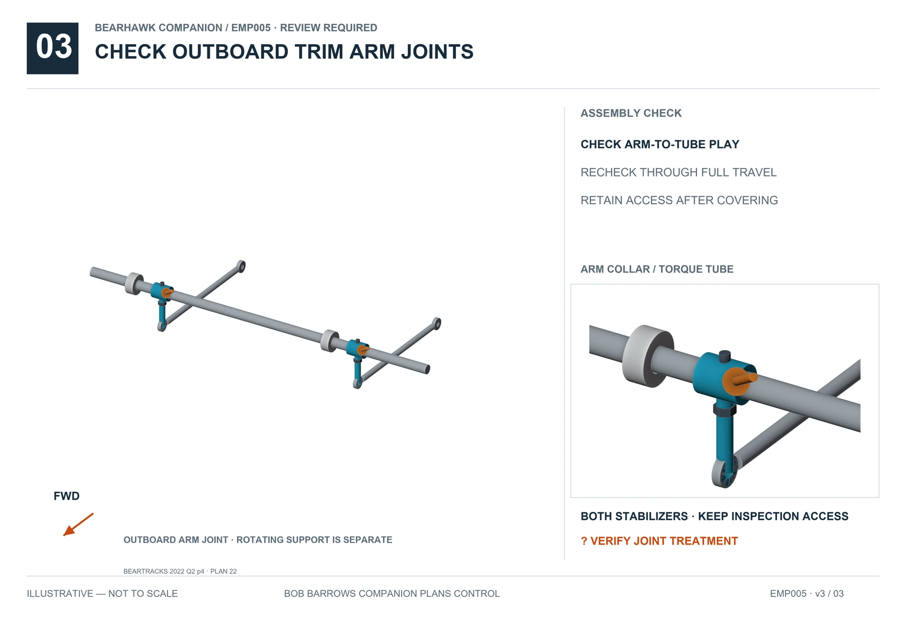

11 · EMPENNAGE · EMP005 · v3
Trim Wheel and Linkages
REVIEW REQUIREDSupported relationships are illustrated. Resolve the open items below before completing affected operations. Hardware inventories do not specify unresolved stack order.
See the real installation
View 1 reference photos →Model and source are shown on every photo. Photos supply visual context only.
Tap an illustration for full-size viewing.
Install trim wheel
Full size ↗
Connect trim tab pushrods
Full size ↗
Check outboard trim arm joints
Full size ↗
Open items
- BH-REV-017 · Trim-wheel friction stack differs between drawing and count sheet.
- BH-REV-018 · Complete trim cable route, length and adjustment not released.
- BH-REV-050 · Factory-kit bolted outboard trim arms may develop play; the newsletter recommendation does not identify an exact compound grade or establish this kit's joint.
Beartracks / factory updates
Sources and visual references
- Companion plans21–22
- BHManual-Fuselage1-25Rev1.pdf p16
- Companion Hardware Callout Rev2, supplied Companion+Hardware+Customer+-+Sheet1-2.pdf p4 HK-TS4
- 2019_Beartracks.pdf, PDF p2 / Q1 p2, Safety Update from Bob
- 2022_Beartracks.pdf, PDF p16 / Q2 p4, Mark Goldberg: Elevator Trim Torque Tube on Factory Kits
- Patrol-2004-2009.pdf, PDF p61 / 2009 p7, Tail Wire Ends and Trim Pushrod